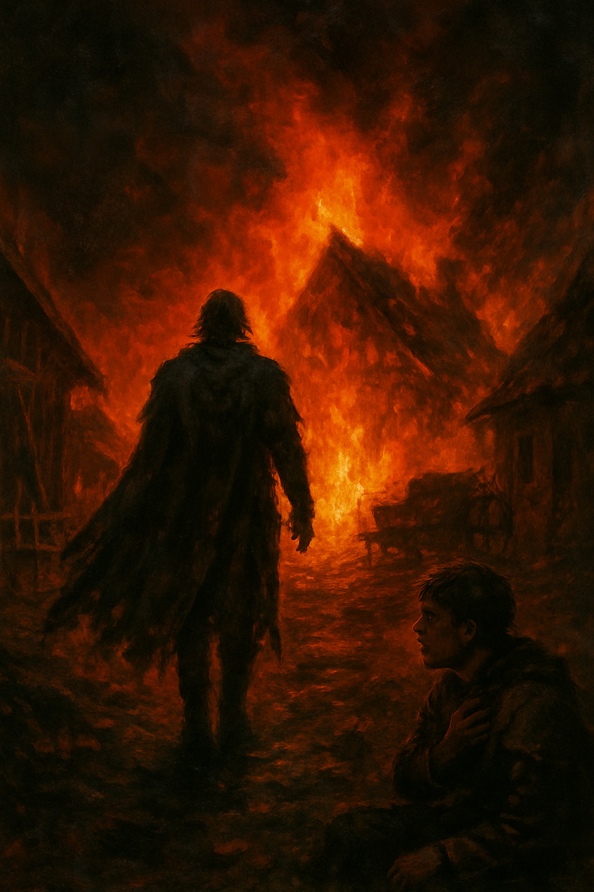

Здесь будет начало твоей главы. Пока это черновой текст, чтобы проверить, как будущий ридер держит атмосферу истории и не мешает чтению.
Деревня стояла на холме, вдали от больших дорог. Утром над крышами поднимался тонкий дым, а у леса медленно шевелился туман.
✦ ✦ ✦
Позже сюда можно вставлять настоящие абзацы, сцены, описания, диалоги и иллюстрации между ними.
